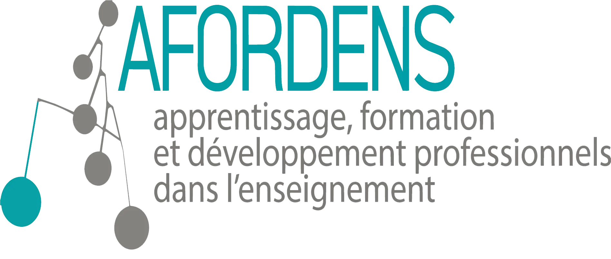

Professionnalisation & intervention · 752501
Séance 12 — Mardi 18 mai 2027
Comment gérer son état d'esprit ? Et quel est l'impact des émotions dans l'apprentissage ?
Dernière séance de contenu du semestre : elle réactive l'ensemble des notions travaillées, en tire les liens, et referme le cours sur les débats qui traversent encore le champ.
À l'issue de cette séance, vous serez capable de :
La séance 3 a montré comment la mémoire encode. Reste une question plus fondamentale : pourquoi ? La réponse renverse l'intuition courante.
La mémoire n'existe pas pour conserver le passé, mais pour anticiper le futur. Chaque souvenir enregistré sert à préparer une décision : où chasser à la prochaine saison, quel outil refaire, avec qui s'associer, de quoi se méfier avant même de l'avoir identifié.
Alain Berthoz, neurophysiologiste, la décrit comme un instrument de prédiction ; Paul Frankland, neuroscientifique, comme un dispositif destiné à optimiser la prise de décision plutôt qu'à transmettre de l'information à travers le temps.
Cette dimension anthropologique éclaire la suite : si la mémoire trie en fonction de l'utilité future, alors ce qui n'est jamais réactivé est logiquement éliminé.
Ce qu'il reste d'un contenu appris une seule fois, sans reprise :
| Délai | Rétention |
|---|---|
| Immédiatement après | 100 % |
| Après 20 minutes | 58 % |
| Après 1 jour | 38 % |
| Après 1 mois | 17 % |
Oublier n'est pas un défaut : c'est le fonctionnement normal d'un système qui trie. Ce qui se travaille, ce n'est pas la capacité de mémoire, c'est le rythme des reprises.
À chaque rappel, la rétention repart de 100 %, et la courbe qui suit descend moins vite. Cinq reprises espacées laissent environ 94 % du contenu un mois plus tard, là où une seule séance intensive n'en laisse que 14 %. Réviser régulièrement, brièvement, bat systématiquement la révision en un seul bloc.
Les émotions ne sont pas un bruit parasite autour de l'apprentissage : elles en font partie. Une situation d'évaluation, une mise en compétition, une réussite inattendue modifient l'attention, la mémorisation et l'envie de recommencer.
Cela rejoint l'agilité mentale travaillée en séance 5 : ce qui se joue sous pression n'est pas la compétence, mais l'accès à cette compétence. D'où l'intérêt, pour qui forme, de considérer le climat émotionnel du groupe comme une variable pédagogique à part entière — et non comme un supplément d'ambiance.
La posture attendue au terme du cours n'est donc pas de détenir les bonnes réponses, mais de savoir situer un débat, reconnaître ce qui est établi et ce qui ne l'est pas, et se tenir informé.
Un temps de la séance est consacré à l'évaluation du cours : ce qui vous a aidé, ce qui pourrait évoluer. Ces retours nourrissent directement les éditions suivantes — plusieurs évolutions de cette année en sont issues.
Séance 13 — Démonstration des projets · mardi 25 mai 2027, 14h15 – 16h10, salle M1140. Séance prolongée, suivie d'un moment convivial.
Échéance du 25 mai : plan d'action et présentation du livrable — démonstration de 10 minutes, évaluée.
À préparer : répétez la démonstration en conditions réelles, avec le livrable en main.